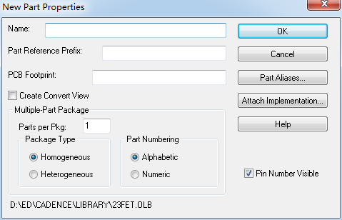
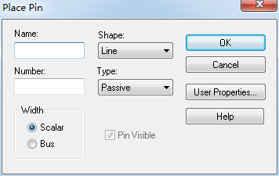
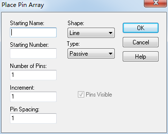
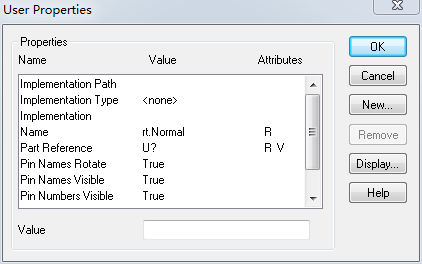
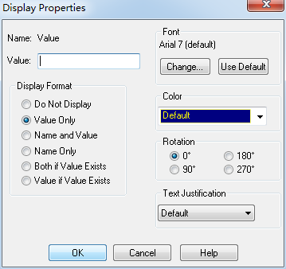
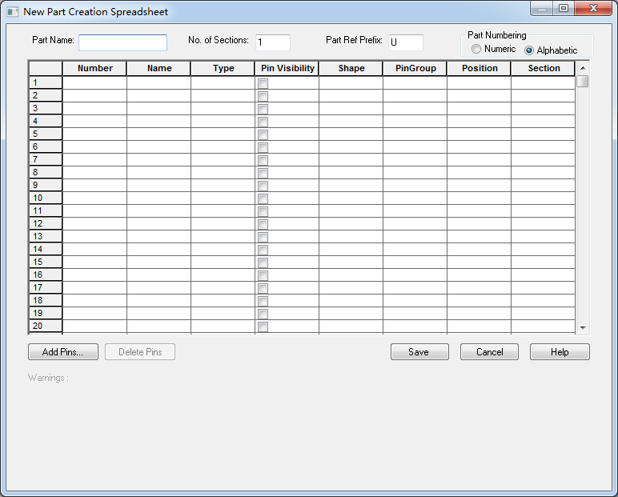
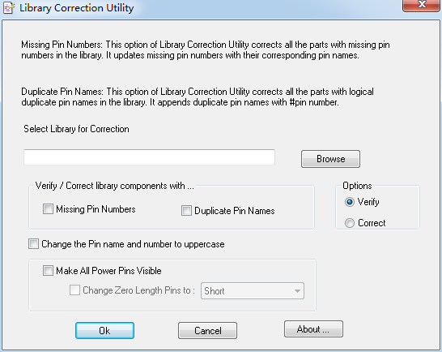

20160329
OrCAD Library
File / New or Open / Library
选择项目名称 ***.olb / 右键 or Design /
New Part
New Part From Spreadsheet(利用空白表格建立新零件)
New Symbol(建立新符号)
Library Properties(显示Library的属性内容)
New Part Properties

Part Reference Prefix : 代表一个元件的参考编号,如 : U1、U2、U3...
PCB Footprint : PCB封装
Create Convert View : 零件外观转换 有些元件（特别是数字元件）除具有基本表示形式外，还可采用摩根（De Morgan）等其它形式
例如双输入“与非门”的摩根等效形式是双输入“非或门”。在电路图中放置该元件时，既可采用基本形式，也可采用等效形式。
Multiple-Part Package 建立复合式元件
Parts per Pkg : 元件分几部分建立,如果新建的是一种Multiple Part Package元件(即一个元件封装中有多个单元,例如7400中有4个与非门)，
在该栏中指定一个封装中包含几个单元（这里的单元指的就是新建的这个元件符号）
Package Type : 如果新建的是一种Multiple Part Package，这里指明其中的各个单元是相同的还是不同的。
Homogeneous 表示单元完全相同,比如2个相同与门构成的IC
Heterogeneous 表示单元不完全相同,比如一个CPU的多个分部
Part Numbering : 如果新建的是一种Multiple Part Package,那么画电路原理图时是采用U?A、U?B、U?C...形式编号,还是采用U?1、U?2、U?3...形式编号
Alphabetic 字母 U?A、U?B、U?C...
Numeric 数字 U?1、U?2、U?3...
Pin Number Visible : 选中后在画电路原理图时会显示该元件的引线编号,否则不显示
Part Aliases : 对新建的元件符号，可以赋予一个或多个别名
点击Part Aliases按钮屏幕出现Part Aliases对话框。点击其上的New按钮，添加元件别名后再按OK就可以了
Attatch Implementation : 由于有些元件功能是建立在其它元件、电路或VHDL语言等描述基础上实现的，
所以有时可能需要将底层的内容附加到该文件库中，点击"New Part Properties"对话框中的的Attatch
Implementation按钮屏幕出现Attatch Implementation对话框。在Implementation Type下拉菜单中有7种选择：
(a) None:不附加任何附件参数
(b) Schematic View:附加一个电路图
(c) VHDL:附加一个VHDL文件
(d) EDIF:附件一个EDIF格式网表文件
(e) Project:附加一个可编成逻辑设计项目
(f) PSpice Model:附加一个描述元件特性参数的模型，可供PSpice模拟程序调用（如果没有该项，则无法进行PSpice电路系统级仿真
(g)PSpice Stimulus:附加一个PSpice激励信号描述文件
绘制元件外形
1.画一般线条 Place / Line
2.画折线 连续线段 Place / Polyline 画斜线则按住Shift键
3.画矩形 Place / Rectangle 画正方形则按住Shift键
4.画圆或椭圆 Place / Ellipse 画正圆则按住Shift键
5.画圆弧线 Place / Arc
6.画椭圆弧线 Place / Elliptical Arc
7.画贝塞尔曲线 Place / Bezier curve
8.添加图片 Place / Picture
添加文本 Place / Text
文本换行 Ctrl + Enter
Part : 放置元件
Database Part : 调用Internet中的符号库中的元件
Wire : 绘制电气连接线
Bus : 绘制总线
Junction : 放置节点
给元件添加引脚
1.添加单个引脚 Place / Pin

Name : 引脚的名称, 如IC的Vcc、GND. 设置引脚名称时,若引线名称带有横线(即非),则设置时应在每个字母后面加"\"
Number : 引脚编号 如IC的引脚1、2、3、4、5、6...
????Width 选择一般信号引脚(Scalar)或(Bus),如果选择Bus则总线可以直接与引脚相连
????Pin Visible 只有当引脚类型设置为Power时才勾选该复选框
Shape : 引脚形状
Clock 表示该引脚输入为时钟信号
Dot 表示"非",输入信号取反
Dot-Clock 表示对输入时钟求非,即反向时钟输入
Line 一般引脚引线,其长度为3个格点间距
Short 短引脚引线,其长度为1个格点间距
Short Clock 表示短引脚引线的时钟输入端
Short Dot 短引线,表示"非",输入信号取反
Short Dot Clock 短引脚引线,对输入时钟求非,即反向时钟输入
Zero Length 表示零长度的引脚引线,一般用于表示"电源"和"地"
Type : 引脚类型
3-State 三态引脚,可能为高电平、低电平和高阻3种状态
Bidirectional 双向信号引脚,既可作输入又可作输出
Input 输入引脚
Open Collector 开集电极输出引脚
Open Emitter 开发射极输出引脚
Output 输出引脚
Passive 无源器件引脚,如电阻引脚
Power 电源和地引脚
Place Pin Array(一次摆放多支相同形式属性之Pin脚)

Starting Name : 引脚名称
Starting Number : 引脚编号
Number of Pins : 欲摆放脚位数量
Increment : 引脚序号间隔,输入负数时,为递减
Pin Spacting : 引脚方向及间距,输入负数时为自下向上
元件属性(Part Properties)
User Properties

True 真
False 假
Part Reference prefix
PCB Footprint
Pin Names Rotate
Pin Names Visible 脚名称可见
Pin Numbers Visible 脚序号可见
Value
Source Package
Value 01
显示属性(Display Properties)

Do Not Display ----- 不显示
Value Only ---------- 只显示值
Name and Value ---- 显示名字和值
Name Only ---------- 只显示名字
Both if Value Exists --如果值存在显示
Value if Value Exists
New Part From Spreadsheet(利用空白表格建立新零件)
选择项目名称 ***.olb / 右键 or Design / New Part From Spreadsheet(利用空白表格建立新零件)

Part Name : 零件名称
No. of Section : 将零件分为的 Package 数目(Type : Heterogeneous)
Part Ref Prefix : 零件序号开头
Part Numbering :
Numeric 零件 Package 序号以数字 U?1、U?2、U?3...
Alphabetic 零件 Package 序号以数字显示 U?A、U?B、U?C...
表格栏位 :
Number : Pin number
Name : Pin name
Type : Pin type
Pin Visibility : 零件Pin是否显示
Shape : Pin 形状
PinGroup : For Allegro pin swap
Position : 分配Pin 所在位置为上下左右
Section : 选择Pin被分配至哪个Package
Library Correction Utility零件库修正
修正零件库中之零件Pin number与Pin name错误问题
选中元件名称 / Accessories / Library Correction Utility / Library Verification Correction

Missing Pin number : 将遗漏 Pin number 的 Pin 脚于 Pin number 位置中补上 Pin Name
Duplicate Pin Names : 将重复的 Pin Names 于 Pin Names位置中加上 #Pin number
Options :
Verify : 于Log file 中呈现需修正之处,并不会真正去修正零件
Correct : 修正零件
Verify / Correct library components with欲修正零件的...
Missing Pin number : 遗漏 Pin number
Duplicate Pin Names : 重复 Pin Name
Change the Pin name and number to uppercase : 将 Pin Names 和 Pin number修改成大写英文
Make All Power Pins Visibe
Change zero length pin to :将没显示出的zero length Power pin 换成别种type的Power pin
第26页
1' AMPLIFIER.OLB共182个零件，存放模拟放大器IC，如CA3280，TL027C，EL4093等。
2' ARITHMETIC.OLB共182个零件，存放逻辑运算IC，如TC4032B，74LS85等。
3' ATOD.OLB共618个零件，存放A/D转换IC，如ADC0804，TC7109等。
4' BUS DRIVERTRANSCEIVER.OLB共632个零件，存放汇流排驱动IC，如74LS244，74LS373等数字IC。
5' CAPSYM.OLB共35个零件，存放电源，地，输入输出口，标题栏等。
6' CONNECTOR.OLB共816个零件，存放连接器，如4 HEADER，CON AT62，RCA JACK等。
7' COUNTER.OLB共182个零件，存放计数器IC，如74LS90，CD4040B。
8' DISCRETE.OLB共872个零件，存放分立式元件，如电阻，电容，电感，开关，变压器等常用零件。
9' DRAM.OLB共623个零件，存放动态存储器，如TMS44C256，MN41100-10等。
10' ELECTRO MECHANICAL.OLB共6个零件，存放马达，断路器等电机类元件。
11' FIFO.OLB共177个零件，存放先进先出资料暂存器，如40105，SN74LS232。
12' FILTRE.OLB共80个零件，存放滤波器类元件，如MAX270，LTC1065等。
13' FPGA.OLB存放可编程逻辑器件，如XC6216/LCC。
14' GATE.OLB共691个零件，存放逻辑门（含CMOS和TLL）。
15' LATCH.OLB共305个零件，存放锁存器，如4013，74LS73，74LS76等。
16' LINE DRIVER RECEIVER.OLB共380个零件，存放线控驱动与接收器。如SN75125，DS275等。
17' MECHANICAL.OLB共110个零件，存放机构图件，如M HOLE 2，PGASOC-15-F等。
18' MICROCONTROLLER.OLB共523个零件，存放单晶片微处理器，如68HC11，AT89C51等。
19' MICRO PROCESSOR.OLB共288个零件，存放微处理器，如80386，Z80180等。
20' MISC.OLB共1567个零件，存放杂项图件，如电表（METER MA），微处理器周边（Z80-DMA）等未分类的零件。
21' MISC2.OLB共772个零件，存放杂项图件，如TP3071，ZSD100等未分类零件。
22' MISCLINEAR.OLB共365个零件，存放线性杂项图件（未分类），如14573，4127，VFC32等。
23' MISCMEMORY.OLB共278个零件，存放记忆体杂项图件（未分类），如28F020，X76F041等。
24' MISCPOWER.OLB共222个零件，存放高功率杂项图件（未分类），如REF-01，PWR505，TPS67341等。
25' MUXDECODER.OLB共449个零件，存放解码器，如4511，4555，74AC157等。
26' OPAMP.OLB共610个零件，存放运放，如101，1458，UA741等。
27' PASSIVEFILTER.OLB共14个零件，存放被动式滤波器，如DIGNSFILTER，RS1517T，LINE FILTER等。
28' PLD.OLB共355个零件，存放可编程逻辑器件，如22V10，10H8等。
29' PROM.OLB共811个零件，存放只读记忆体运算放大器，如18SA46，XL93C46等。
30' REGULATOR.OLB共549个零件，存放稳压IC，如78xxx，79xxx等。
31' SHIFTREGISTER.OLB共610个零件，存放移位寄存器，如4006，SNLS91等
OrCAD相关问题：
1.采用orcad绘制原理图时，从库中调用LM7805为何不显GND引脚？
答：可以在属性中将power脚显示那一项打沟就会显示GND。如果要显示长线可以选择中它，右键EDIT后,再双击GND，选Line即可，LM7805不显GND引脚是因为开始它的设置为短线脚。如果要将GND改为输出可以将power改为output。
2.ORCAD中有滑动变阻器吗？
答：在OrCAD自带的库DISCRETE中，RESISTOR TAPPED和RESISTOR VAR都代表滑动变阻器。
FPGA.OLB
存放可编程逻辑器件，如XC6216/LCC。
GATE.OLB
共691个零件，存放逻辑门（含CMOS和TLL）。
LATCH.OLB
共305个零件，存放锁存器，如4013，74LS73，74LS76等。
LINE DRIVER RECEIVER.OLB
共380个零件，存放线控驱动与接收器。如SN75125，DS275等。
MECHANICAL.OLB
共110个零件，存放机构图件，如M HOLE 2，PGASOC-15-F等。
MICROCONTROLLER.OLB
共523个零件，存放单晶片微处理器，如68HC11，AT89C51等。
MICRO PROCESSOR.OLB
共288个零件，存放微处理器，如80386，Z80180等。
MISC.OLB
共1567个零件，存放杂项图件，如电表（METER MA），微处理器周边（Z80-DMA）等未分类的零件。
MISC2.OLB
共772个零件，存放杂项图件，如TP3071，ZSD100等未分类零件。
MISCLINEAR.OLB
共365个零件，存放线性杂项图件（未分类），如14573，4127，VFC32等。
MISCMEMORY.OLB
共278个零件，存放记忆体杂项图件（未分类），如28F020，X76F041等。
MISCPOWER.OLB
共222个零件，存放高功率杂项图件（未分类），如REF-01，PWR505，TPS67341等。
MUXDECODER.OLB
共449个零件，存放解码器，如4511，4555，74AC157等。
OPAMP.OLB
共610个零件，存放运放，如101，1458，UA741等。
PASSIVEFILTER.OLB
共14个零件，存放被动式滤波器，如DIGNSFILTER，RS1517T，LINE FILTER等。
PLD.OLB
共355个零件，存放可编程逻辑器件，如22V10，10H8等。
PROM.OLB
共811个零件，存放只读记忆体运算放大器，如18SA46，XL93C46等。
REGULATOR.OLB
共549个零件，存放稳压IC，如78xxx，79xxx等。
SHIFTREGISTER.OLB
共610个零件，存放移位寄存器，如4006，SNLS91等。
SRAM.OLB
共691个零件，存放静态存储器，如MCM6164，P4C116等。
TRANSISTOR.OLB
共210个零件，存放晶体管（含FET，UJT，PUT等），如2N2222A，2N2905等。
VA IO
Analog Digital